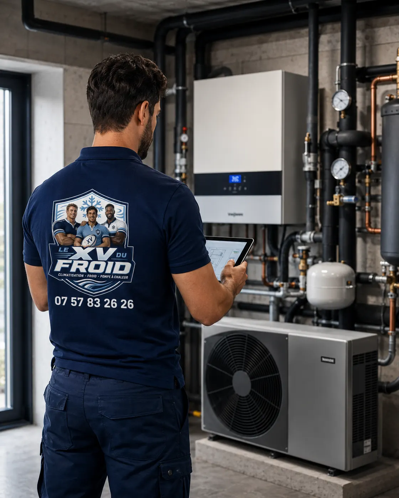

Entretien climatisation Élancourt · 78990
Entretien climatisation à Élancourt : votre clim n’a jamais été entretenue, par où commencer
Cinq ans, huit ans, parfois plus. L’appareil tourne chaque été, il souffle encore à peu près frais, et personne n’a jamais ouvert la façade. Rassurez-vous : rien n’est perdu. Un premier passage après une longue pause se prépare, et il réserve rarement de mauvaises surprises quand on s’y prend avant la panne.
- Premier passage complet
- État de l’appareil expliqué
- Devis écrit si une réparation s’impose

Premier passage
Ce qui se passe quand on rouvre un appareil que personne n’a regardé depuis longtemps.
Une climatisation qui n’a jamais été entretenue n’est pas forcément en mauvais état. Tout dépend de l’usage, de la poussière du logement et de l’endroit où elle est posée. Ce qu’on constate presque toujours, en revanche, c’est un filtre feutré, une batterie grise et un bac qui sent l’eau stagnante.
Le premier entretien est donc plus long que les suivants. On ne se contente pas d’un coup de brosse : on regarde d’abord, on note, puis on nettoie dans l’ordre, pour ne pas pousser la saleté plus loin dans l’appareil.
À Élancourt, beaucoup de pavillons et d’appartements ont été équipés il y a une dizaine d’années, parfois par le promoteur ou le précédent propriétaire. Les appareils sont là, souvent oubliés dans un coin de séjour.

Entretien climatisation Élancourt : l’état des lieux de départ
On commence appareil en marche. Écoute des bruits, relevé des températures à la reprise et au soufflage, observation de l’évacuation de l’eau. Ces mesures servent de point de comparaison pour la suite.
Puis on coupe, on ouvre, on regarde. Filtres, batterie, turbine, bac. On prend des photos de ce qu’on trouve, avant nettoyage, pour que vous voyiez l’écart. Rien n’est démonté sans que vous sachiez pourquoi.
- Mesures avant intervention
- Photos avant et après
- Observations notées
Le nettoyage
Dans quel ordre on nettoie une clim restée longtemps sans passage
Les filtres d’abord, lavés ou remplacés s’ils sont déformés. Ensuite la batterie, avec un produit adapté qui ne laisse pas de résidu. La turbine, elle, se nettoie en place ou déposée, selon le modèle : c’est la partie la plus longue et la plus utile.
Le bac et le tuyau d’évacuation passent en dernier, une fois la poussière retombée. Un nettoyage climatisation Élancourt bien mené se termine par un test d’écoulement avec de l’eau claire, pour vérifier que rien ne déborde.
Sur le groupe extérieur, on dégage les feuilles et les saletés entre les ailettes, puis on contrôle les fixations et les vibrations.
Ce qu’on découvre
Les trouvailles les plus fréquentes sur un appareil jamais suivi
Aucune n’est une fatalité, mais mieux vaut les connaître avant le rendez-vous.
- Filtre colmaté : l’air passe mal, l’appareil force, la pièce rafraîchit moins vite.
- Turbine encrassée : bruit de balancier, odeur de renfermé, débit d’air faible.
- Bac bouché : gouttes sous l’unité ou eau qui coule le long du mur.
- Fixations desserrées : vibrations du groupe extérieur, tuyaux qui frottent.
- Isolant des liaisons abîmé : condensation sur le cuivre, surtout en été.
Ce qui peut s’ajouter
Quand le nettoyage ne suffit pas
Si l’appareil refroidit mal malgré un nettoyage complet, on contrôle ensuite le circuit : pression, étanchéité, état du gaz. Une fuite lente est possible après des années de service, mais elle se vérifie, elle ne se suppose pas.
Dans ce cas, nous vous remettons un devis écrit avec les options : réparer, ou remplacer si l’appareil est trop ancien pour justifier la dépense. Aucune réparation n’est lancée sans votre accord.
À Élancourt
Du quartier de la Villedieu aux Sept Mares : des logements, des usages
Un appartement en étage élevé près de la gare n’a pas les mêmes encrassements qu’un pavillon avec jardin et arbres. Le pollen, les fibres de textile, les poils d’animaux : chaque logement a sa poussière.
Nous adaptons la durée et le matériel à ce que nous trouvons, pas à un forfait imaginaire.
Prenez rendez-vous au printemps, avant les premières chaleurs. Un appareil remis en état en mai donne moins de mauvaises surprises qu’un appareil qu’on rallume en juillet.
Questions
Entretien d’une clim jamais entretenue à Élancourt : vos questions
Ma clim n’a jamais été entretenue, est-il trop tard ?
Non. Dans la grande majorité des cas, un nettoyage complet suffit à redonner un fonctionnement correct. Si un composant est fatigué, on vous le dit avant de continuer.
Le premier passage dure-t-il plus longtemps ?
Oui, souvent. Il faut compter plus de temps que pour un entretien de suivi, surtout si la turbine doit être nettoyée. Nous vous donnons une estimation en prenant rendez-vous.
Que comprend l’entretien climatisation Élancourt chez vous ?
Filtres, batterie, turbine, bac, évacuation, groupe extérieur, mesures de fonctionnement et compte rendu écrit remis après le passage.
Mon appareil sent mauvais, est-ce lié au manque d’entretien ?
Très souvent. L’odeur vient de la poussière humide dans la turbine ou de l’eau stagnante dans le bac. Un nettoyage la fait disparaître dans la plupart des cas.
Pouvez-vous intervenir sur un appareil posé par un autre installateur ?
Oui, quelle que soit la marque. Nous relevons les références à la première visite et nous ouvrons un suivi.
Dois-je faire quelque chose avant votre venue ?
Dégagez l’accès sous l’unité intérieure et autour du groupe extérieur. Si vous avez la notice, préparez-la : elle accélère l’identification du modèle.
Dans votre ville
Les autres services à Élancourt
Un besoin différent, une page différente : dépannage, entretien, installation ou urgence.
- Climatisation Élancourt : clim pour une maison de 100 m²
- Dépannage climatisation Élancourt : panne intermittente, comment la décrire au technicien
- Urgence climatisation Élancourt : que dire au téléphone pour gagner du temps
- Climatisation dans les Yvelines (78) : installation, dépannage, entretien, urgence
Autour de chez vous
Entretien de climatisation dans les villes voisines
Si vous êtes à la limite de deux communes, lisez aussi la page d’à côté.
- Entretien climatisation Montigny-le-Bretonneux : étanchéité et pressions du circuit
- Entretien climatisation Trappes : un multi-split, plusieurs unités, un seul passage
- Entretien climatisation Plaisir : bureaux, boutiques et petits locaux d’activité
- Entretien climatisation Saint-Cyr-l’École : combien de temps dure le passage
- Entretien climatisation Guyancourt : le carnet d’entretien et ce qu’il faut garder
- Entretien climatisation Rambouillet : groupe extérieur, feuilles, mousse et vibrations
- Entretien climatisation Mantes-la-Jolie : ce que dit la réglementation
- Entretien climatisation Vélizy-Villacoublay : évacuation des condensats, tuyau et siphon
- Entretien climatisation Limay : un appareil posé par un autre installateur
À côté
D’autres besoins dans les communes voisines
Chaque ville a ses pages.
Nos services
Aller plus loin sur la climatisation
Les pages du site qui complètent celle-ci : services, guides pratiques et devis.
- Dépannage climatisation en Île-de-France
- Installation de climatisation : split, gainable, monobloc
- Entretien de climatisation et de clim réversible
- Demander un devis climatisation gratuit
- Toutes nos zones d’intervention
- Fuite d’eau d’un climatiseur : causes et solutions
- L’entretien de la climatisation est-il obligatoire ?
Où on intervient
Élancourt et communes voisines
Le centre d’Élancourt, la Villedieu, les Sept Mares et les quartiers pavillonnaires, ainsi que Maurepas, Trappes, Plaisir et Guyancourt.
Prévoir un entretienÀ lire aussi
Autour d’Élancourt
Pages voisines : entretien climatisation Plaisir, entretien climatisation Guyancourt.
Transparence
Un devis clair avant toute intervention.
Vous savez ce qui est prévu, pourquoi c’est nécessaire et à quel tarif avant que le technicien commence. Puis contrôles et essais avant son départ.